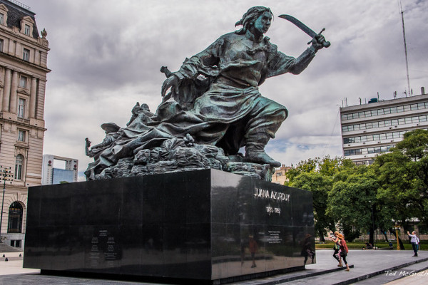

Efemerides de Juana Azurduy



- 12 de julio de 1780: Nace en toroca,potosi.
- 1799: Se casa con Manuel Asencio Padilla.
- 1816: Belgrano le regala su sable.
- 25 de mayo de 1862: Muere en Sucre.
- 2009:La ascienden a Generala.